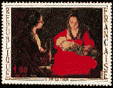
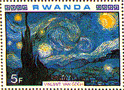

 |
INFORMATII GENERALE |  |
Incarcati o baza de date gratuita
Pentru a incarca pe calculatorul Dv. o baza de date si o lista de inventar cu tema "Pictura si arta pe marcile postale"presati va rog pe conexiunea din stinga: Incarcare BD . Baza de date contine peste 90% din marcile postale existente cu tema respectiva. Pentru informatii suplimentare ma puteti contacta prin: posta electronica (eliminati spaam din adresa).
Clubul Internet al Colectionarilor de Arta pe Marci Postale
Daca sinteti colectionar de Arta pe Marci Postale, puteti sa solicitati inscrierea (gratuita) in acest club, care a ajuns la ora scrierii acestei pagini la un numar de peste 800 de membri, din 80 de tari diferite. Apasati intii pe linkul Statutul PASIC, apoi pe Membrii PASIC. Vi se va pune la dispozitie o pagina pentru a va putea inscrie.
Vizitati Muzeul Filatelic de Arta pe Internet
Primul muzeu pe Internet, cu tema "Pictura si Arta pe Marcile Postale", este deschis pentru Dv. 24 de ore pe zi, 7 zile pe saptamina. Sinteti invitat calduros sa il vizitati, apasind linkurile din stanga: Tari, Muzee, Galeria de arta.Va doresc o vizitare placuta!